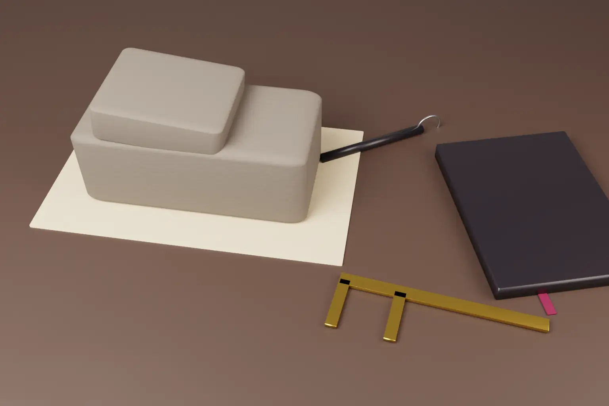

Can a registered EU design stop a car before it is sold in Europe? Yes. On 20 November 2026 the District Court of The Hague ruled against BYD's EU companies. It ordered them to stop infringing a Land Rover Defender design across the EU. The Ti7 had not yet been sold there.
The case is Jaguar Land Rover Limited v BYD Europe B.V. and others, C/09/712003 / KG ZA 26-956, ECLI:NL:RBDHA:2026:34365. It was a summary proceeding (kort geding) decided by Judge J.B.J. Hoefnagel. The ruling is provisional. JLR must start main proceedings within six months (para 5.7).
- The court held, provisionally, that the Ti7 does not create a different overall impression from JLR's registered EU design 1 (paras 4.24 and 4.25).
- The injunction covers the whole EU and binds BYD's Dutch, French, Swedish, Danish, German, Polish, Italian and Hungarian companies (paras 4.27 and 5.2).
- A threatened infringement was enough. BYD had announced the car for the UK and Europe and would not promise to keep it out of the EU (para 4.8).
- Claims on JLR's UK designs failed. The court had no jurisdiction over BYD UK and found no link between the EU companies and UK sales (paras 4.4 and 4.26).
- The penalty is EUR 100,000 for each day a company fails to comply, capped at EUR 10 million (para 5.3).
The designs and the car
JLR relied on six registered EU designs filed in 2018, before the current Defender launched on 10 September 2019. Each EU design had a matching UK design, created automatically when the Brexit transition period ended on 1 January 2021 (para 2.2). The court decided the case on EU design 1 alone and did not rule on the others (para 4.25).
BYD launched the Fangchengbao Ti7 in China on 9 September 2025. BYD UK later confirmed the car for the UK, with deliveries expected in January 2027 (paras 2.5 to 2.8). Promotional videos for the Ti7 appeared on the YouTube channels of BYD Europe and BYD France (para 2.13).
Why the court found infringement
The test was whether the Ti7 creates a different overall impression on the informed user. The court took the informed user to be a car user who knows the models on the market and pays close attention (para 4.13).
BYD argued that the Defender's features were old. The boxy outline, upright windows, flat roof and high shoulder line all appear in the Ford Flex, Jeep Wrangler and Mercedes G-Class (para 4.16). The court accepted that this "Defender DNA" can narrow the scope of protection (para 4.15).
But the court found a specific combination that the older cars lack. It listed the rounded shoulders and corners and the signature panel at the C pillar. It added the rounded wheel arch cut outs, the continuous window line, the proportions and the overall silhouette (para 4.17).
BYD did not dispute the similarities. It pointed to many differences in lights, grille, bonnet, roof, wheels and rear door (para 4.23). The court held that these differences, though "many in number", were not striking enough to change the overall impression (para 4.24). It added that the gap between the Ti7 and the design was smaller than the gap between the design and the prior art.
Why the UK claims failed
The UK claims failed on jurisdiction and evidence, not on the merits. BYD UK is not a subsidiary of BYD Europe, and the Ti7 is offered in the UK by BYD UK. The court found no basis to treat BYD Europe as an anchor defendant for UK acts (para 4.4).
Against the Dutch companies, JLR did not show that they were involved in the UK offers. A mention of BYD Europe at the foot of a UK press page was not enough (para 4.26). The UK question, if pursued, belongs in a UK court.
What the court did not decide
The court did not rule on the validity of EU designs 2 to 6 (para 4.9). It refused JLR access to the seized documents, information on distribution channels and a public notice. The Ti7 is not yet on the EU market (paras 4.30 and 4.31).
Two related proceedings remain. JLR has a separate copyright and slavish imitation case in the Rotterdam court, with a hearing listed for 25 November 2026 (para 2.14). BYD also brought proceedings against JLR's evidence seizure, decided on 11 November 2026 (para 2.10).
How the US, UK and India protect car designs
| System | Right and term | Infringement test |
|---|---|---|
| EU | Registered EU design, up to 25 years. One court can grant an EU wide injunction. | No different overall impression on the informed user, allowing for the designer's freedom. |
| UK | Registered UK design, including designs cloned from EU registrations at Brexit. Enforced in UK courts. | The same overall impression test, applied by UK courts. |
| US | Design patent. Applications filed on or after 13 May 2015 last 15 years from grant under 35 U.S.C. § 173. Older ones last 14 years. | The ordinary observer test from Egyptian Goddess, Inc. v. Swisa, Inc., 543 F.3d 665 (Fed. Cir. 2008) (en banc). The observer is taken to know the prior art. |
| India | Registered design under the Designs Act, 2000. Ten years, renewable once for five. | Piracy under section 22 covers a fraudulent or obvious imitation of the registered design. |
The practical lesson is the same everywhere. A design right works only where it is registered and enforced. JLR's EU registration gave it one court and one order for 27 member states. Its UK rights needed a separate forum. An Indian or US design would need its own filing and its own court.
For the EU reform behind the Union design rules, see our note on EUIPO trade mark and design changes in 2026. For the Indian test in practice, see Atomberg v Stove Kraft.
Practical steps for product makers
- Register before launch. JLR filed its designs in 2018, before the Defender was shown in September 2019.
- File several views and variants. The court decided on one design, but JLR held six. Missing views weakened JLR's papers (para 4.14).
- Cover each market separately. EU, UK, US and Indian rights are distinct. Plan filings around where the product will be sold.
- Act on announcements. A launch notice and promotional videos were enough to show a threat in the EU.
- Map the corporate group. Injunctions bind named companies. Identify who imports, sells and makes the product in each territory.
Frequently asked questions
Can a car design be protected in the EU?
Yes. A registered EU design protects the appearance of a whole car or its parts. It lasts up to 25 years with renewals every five years.
Why could the court stop sales across the whole EU?
EU designs are unitary rights. An EU design court in the member state where the defendant is domiciled can rule on acts in every member state (para 4.2). A court that sits only because infringement happened locally cannot.
Is the BYD Ti7 banned in the UK?
No. The Dutch court rejected the UK design claims. Any UK claim would need to be brought before a UK court.